Best Taobao Agent: How to Choose the Right Buying Service in 2026
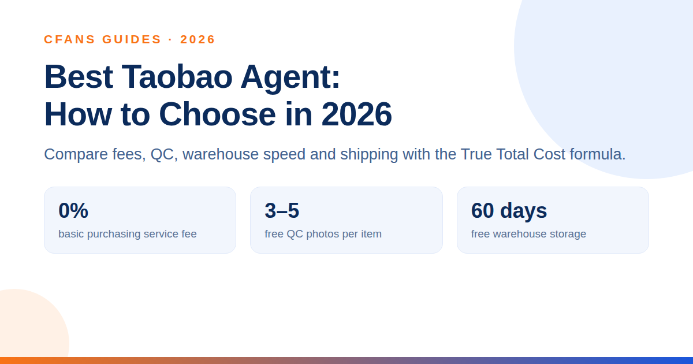
Find the best Taobao agent with the CFans True Total Cost formula; compare fees, QC, warehouse speed, shipping, and support to buy smarter worldwide in 2026.
Read the guide →China Shipping Guide: Costs, Methods, Customs and Smarter Delivery
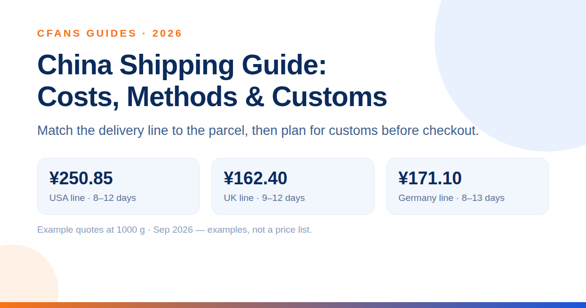
Compare China shipping methods, costs and transit times, learn customs basics, and see how consolidation can make shipping from China simpler and cheaper.
Read the guide →Best Taobao Agent in 2026: How to Choose by True Cost, QC and Shipping
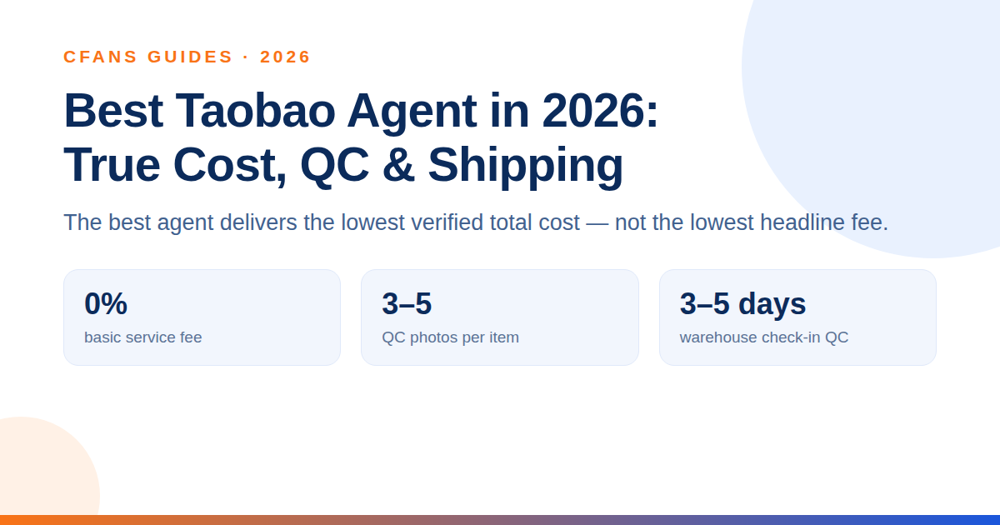
Compare the best Taobao agents in 2026 by true total cost, exchange rates, QC, speed and shipping, then choose the right service for your haul worldwide.
Read the guide →Shipping from China in 2026: The Complete Parcel Buyer’s Guide
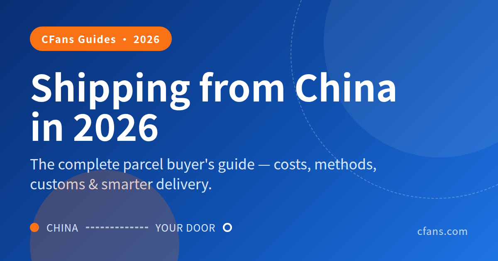
Learn shipping from China in 2026: parcel costs, delivery times, volumetric weight, consolidation, customs, DDP, tracking, and ways to save on every haul.
Read the guide →1688 Agent: How to Buy from 1688 as a Foreigner in 2026
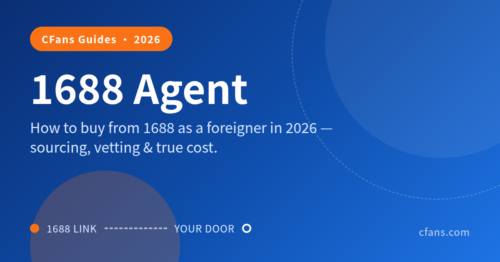
Learn how to buy from 1688 with an agent, compare 1688 vs Taobao, vet suppliers, order samples, calculate true costs, inspect goods, and ship worldwide.
Read the guide →Best Pandabuy alternatives in 2026: compare cost, QC and switching effort
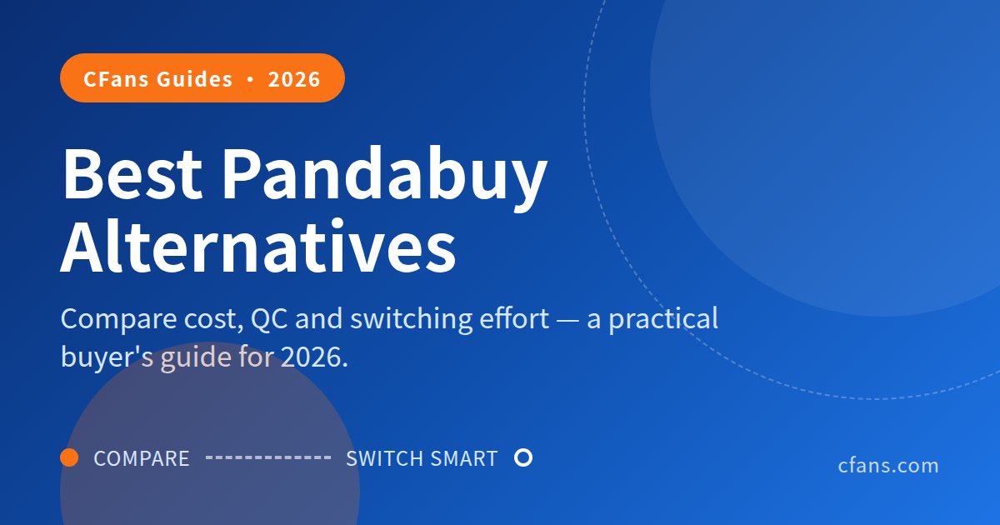
Compare the best Pandabuy alternatives for 2026 by total cost, QC, speed and support, plus a practical migration guide for switching agents more safely.
Read the guide →CFans vs Superbuy: Honest Comparison (2026)
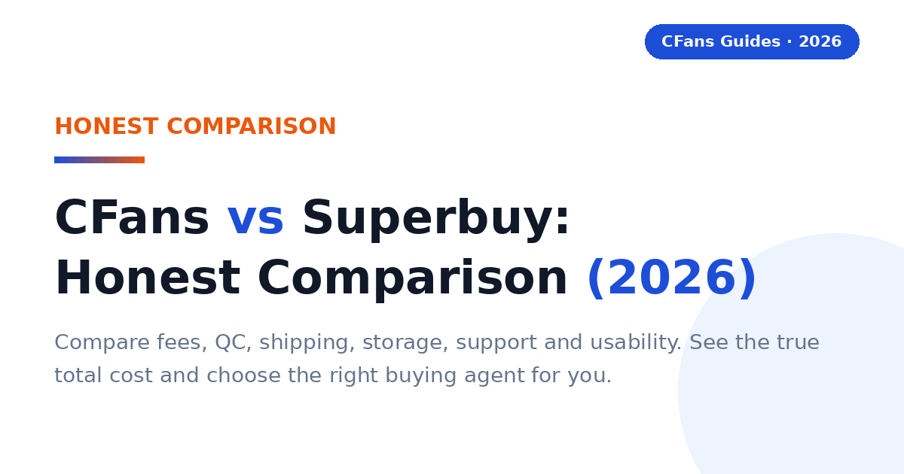
Compare CFans vs Superbuy in 2026 on fees, QC, shipping, storage, support and usability. See the true total cost and choose the right buying agent for you.
Read the guide →Which Taobao agent is best for US buyers in 2026?
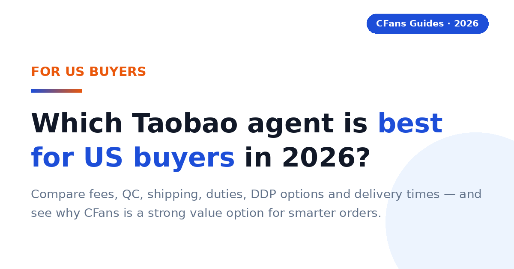
Compare the best Taobao agents for USA buyers in 2026, including fees, QC, shipping, duties, DDP options, delivery times, and CFans for smarter orders.
Read the guide →Why choose CFans: service, process & pricing explained

Learn why overseas buyers choose CFans for China sourcing, QC photos, order consolidation, transparent costs, shipping choices, tracking and support options.
Read the guide →Best Taobao Agent for UK Buyers in 2026
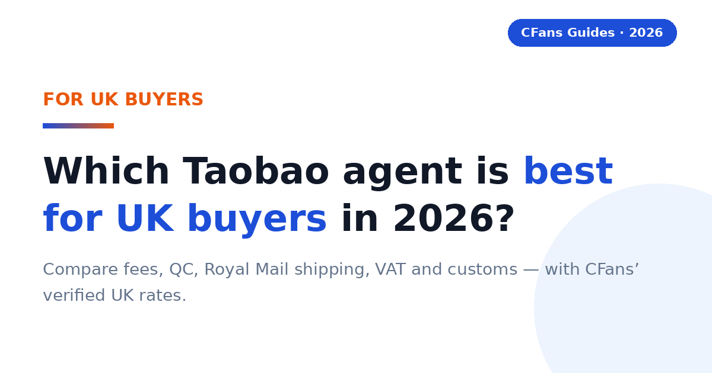
Compare the best Taobao agents for UK buyers in 2026: fees, QC, Royal Mail shipping costs, VAT and customs. See CFans' verified UK rates.
Read the guide →Best Taobao Agent for Germany in 2026
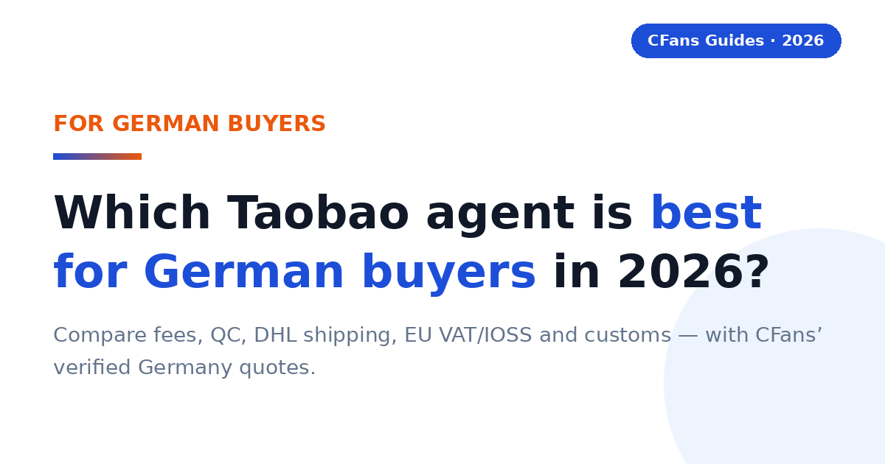
Compare the best Taobao agents for Germany in 2026: fees, QC, DHL shipping rates, EU VAT/IOSS and customs. With CFans' verified Germany quotes.
Read the guide →Best Taobao Agent for Australia in 2026
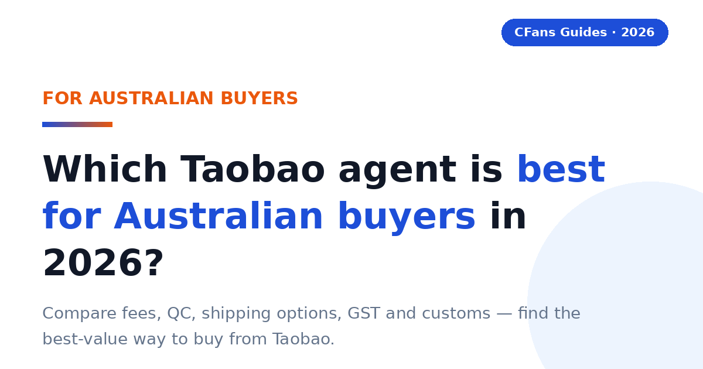
Compare the best Taobao agents for Australia in 2026: fees, QC, shipping options, GST and customs. Find the best-value way to buy from Taobao.
Read the guide →Shipping from China to Canada in 2026
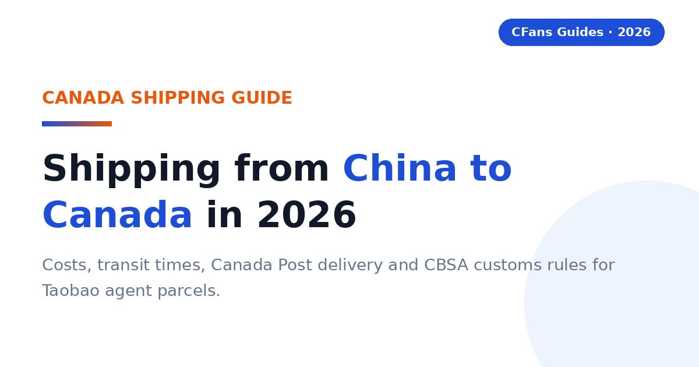
Shipping from China to Canada with a Taobao agent in 2026: costs, transit times, Canada Post delivery and CBSA customs rules explained.
Read the guide →Shipping from China to France in 2026

Shipping from China to France in 2026: parcel costs, delivery times, La Poste/Colissimo handoff and EU VAT/IOSS customs rules.
Read the guide →Best Taobao Agent for Europe in 2026: Costs, Shipping & VAT Guide
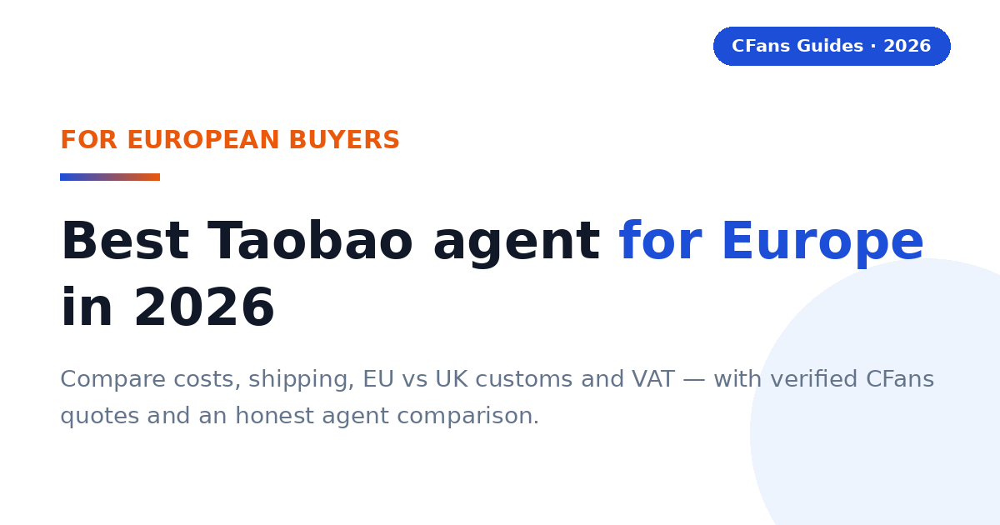
Best Taobao agent for Europe in 2026 — trusted China buying services for EU and UK buyers: costs, shipping times, EU vs UK customs, VAT/IOSS, and an honest agent comparison with verified CFans quotes.
Read the guide →How to Choose the Best Taobao Shipping Agent in 2026
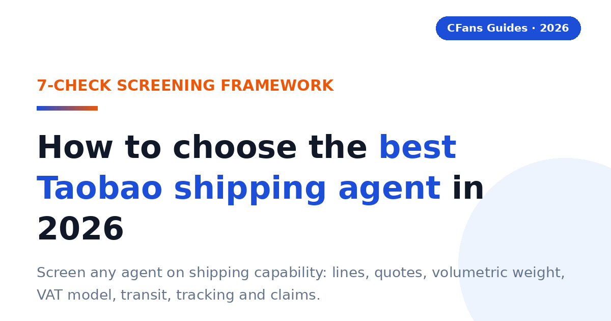
How to choose the best Taobao shipping agent in 2026: a 7-check screening framework for shipping lines, quotes, volumetric weight, VAT/IOSS, transit times, tracking and claims — with verified CFans figures.
Read the guide →Best Taobao Agent for Italy in 2026: Costs, Shipping & Customs Guide
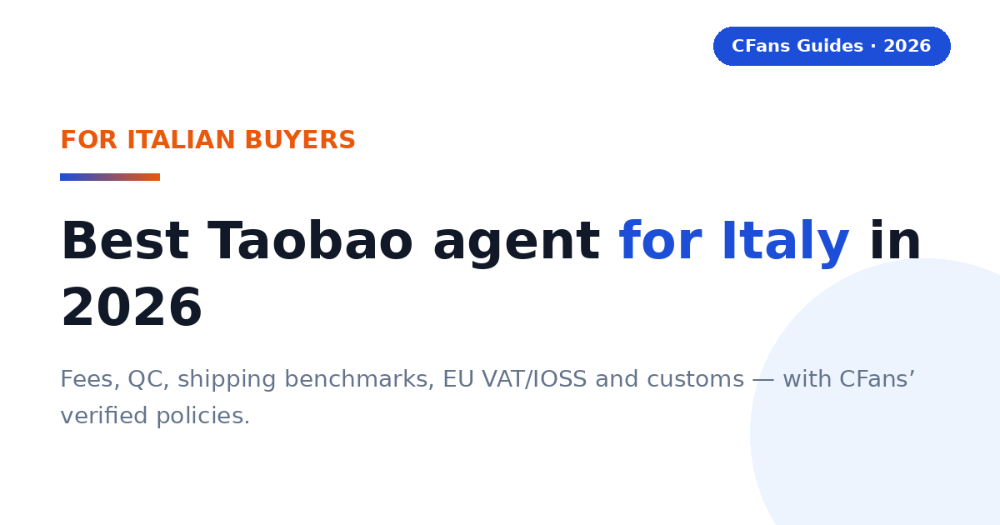
Best Taobao agent for Italy in 2026 — fees, QC, shipping costs, EU VAT/IOSS and customs for Italian buyers, with CFans’ verified policies and live-quote benchmarks.
Read the guide →Best 1688 Agent for Europe in 2026: Costs, Shipping & VAT Guide
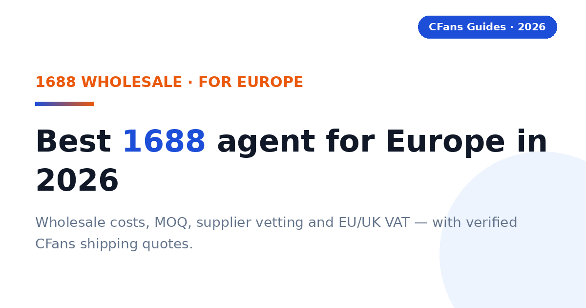
Best 1688 agent for Europe in 2026: wholesale costs, MOQ, supplier vetting, agent comparison, EU/UK VAT and IOSS, and verified CFans shipping quotes for European buyers.
Read the guide →Best Taobao Agent for Spain in 2026: Costs, Shipping & Customs Guide
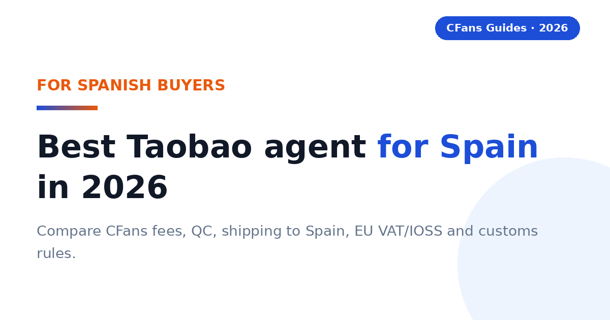
Best Taobao agent for Spain in 2026: compare CFans fees, QC, shipping to Spain, EU VAT/IOSS and customs rules for Spanish buyers.
Read the guide →Shipping from China to Europe in 2026: Costs, Methods, Customs & VAT
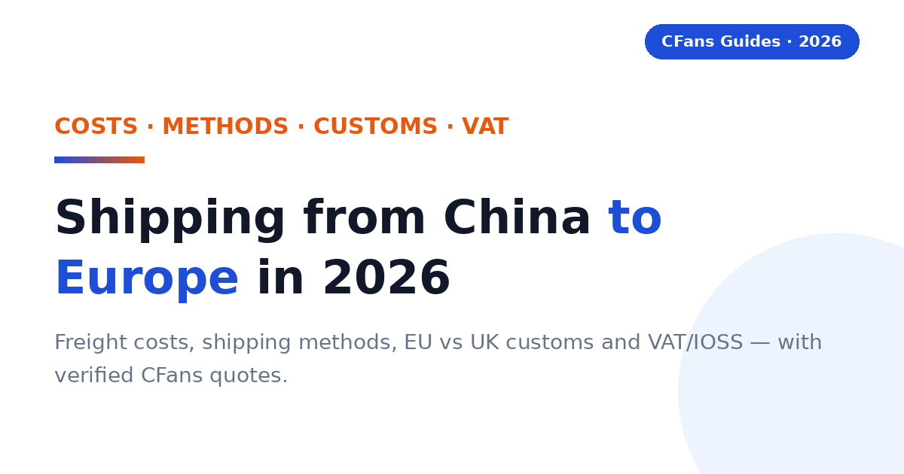
Shipping from China to Europe in 2026 — freight costs, shipping methods, EU vs UK customs, VAT and IOSS explained, and how to pick the right Taobao agent line. With verified CFans UK/Germany quotes.
Read the guide →